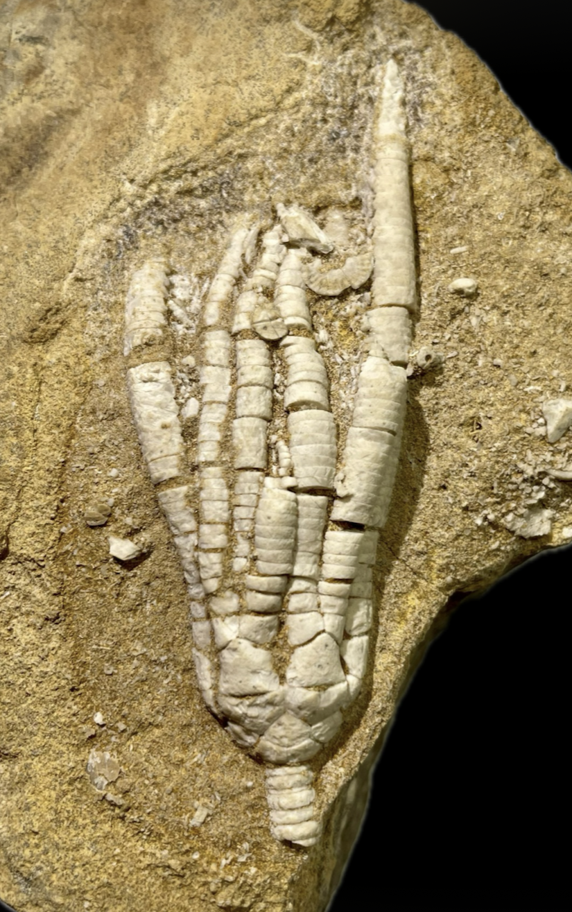

aff. Pegocrinus
• Pennsylvanian
• Donetz Basin
• Donetsk, Donbas, Ukraine
Size: 7 cm crown
An unidentified and likely yet undescribed cladid crinoid from the Pennsylvanian of Ukraine, identified by Georgy Mirantsev as a possible new genus similar to "Pegocrinus". To me the most notable feature of this crinoid is its highly unusual basal circlet. Each basal plate tapers rapidly and horizontally towards either end to achieve a fusiform or "football-like" shape. In doing so the basals end up very narrowly touching each other or even not at all. Though I am hardly an expert, I have not seen this bizarre arrangement of a barely-closed basal circlet in any other crinoid, so I am guessing this will likely be key to its identification and description.
|

|